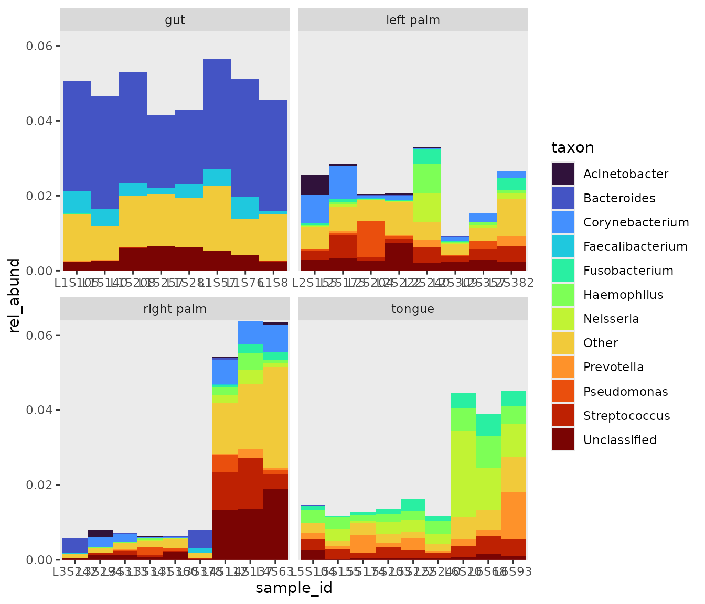
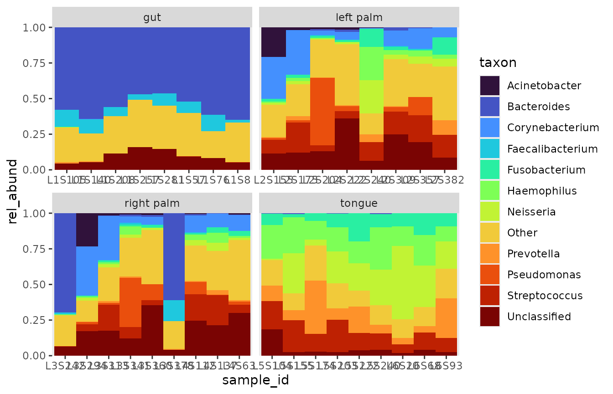

1.1 Calculate relative abundance
calc_rel_abund.RmdRelative abundance
By default, bubbler will calculate relative abundance across all samples, where is the total count of all ASVs across all samples, and is the count of a given ASV, such that:
It is often useful to visualize your data in this form, as to see the proportional counts between samples. Consider the following plot:
# 1 make rel_abund
rel_abund <- rel_abund_qiime(counts_q,
taxa_q,
metadata_q,
taxa_level = "Genus")
# 2. modify rel_abund
rel_abund_pool <- rel_abund %>%
# pool taxa so that only the 12 most abundant taxa are displayed
pool_taxa(n_taxa = 12, keep_metadata = TRUE)
library(ggplot2)
# 3. plot rel_abund
rel_abund_pool %>%
bar_plot() +
# group samples by body site. free_x removes unwanted white space
facet_wrap(~body_site, scales = "free_x" )
When we keep the samples proportional to the total count, certain samples remain dominant over others, which would affect how downstream analysis is interpreted. Maybe it is time to rarefy the data.
Scaling plots
We can also fill up the plotting area, which better displays the within-sample composition, but obfuscates our between-sample proportions.
 # Grouped relative abundance
Filling the plotting area is equivalent to calculating relative abundance between groups, where represents the various levels of our grouping variable, such that:
When calculating a grouped relative abundance, the proportions within each element of that grouping sum to 1, as shown in the above plot, which, in this case is sample_id.